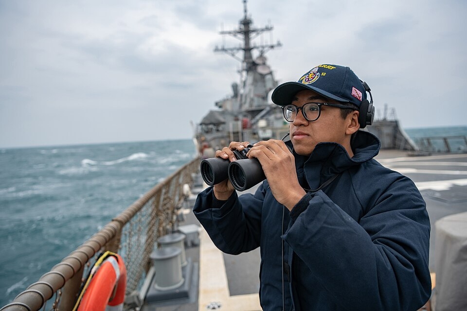

No noticiário, fotos de arquivo recebem títulos, animações e links para notícias datadas. O conteúdo é uma edição fixa do dia 13/11/2026, não um feed contínuo.
Estúdio SVG · laboratório interativo · V3 experimental
Uma ferramenta. Quatro formas de contar uma história.
Experimente cenas vetoriais, fotografia, animação espacial, controles de tempo e edição de um projeto. Tudo é executado no navegador, sem sequências de PNGs.
ESTÚDIO / PRÉVIA AO VIVO● RENDERIZAÇÃO SVG
EDIÇÃO · 13 NOV 2026

PACÍFICO OCIDENTAL · 13 NOV
Exercícios navais próximos de Taiwan
Foto ilustrativa de arquivo — não registra o fato de hoje
00:00 / 00:16
Toque para iniciar o áudio. As animações podem funcionar sem som.
Voz em português · arquivos MP3 locais · reprodução iniciada por interação do usuário. A velocidade selecionada também altera a voz.
O relógio e o sólido espacial mudam conforme o tempo, o controle de câmera ou o toque. O navegador redesenha vetores, não arquivos de vídeo pré-renderizados.
O quarto exemplo altera um SVG que você pode salvar. Para uma apresentação completa, abra o player real de Higiene do Sono ou o código experimental.
Estúdio SVG: projeto de Rogério Duarte. A demonstração é uma interface educativa do funcionamento do sistema, não uma captura da interface do editor. Funcionalidades existentes no player e recursos demonstrativos são identificados individualmente. O boletim é uma seleção editorial fechada de 13 de novembro de 2026.
Fontes das notícias e créditos das fotografias
Noticiário: Reuters — Taiwan, 13 nov 2026; AP — Bahrein, 13 nov 2026; AP — Europa e Ucrânia, 13 nov 2026; The Guardian — Microsoft, 13 nov 2026.
Fotografias de arquivo, não tomadas durante estes eventos: U.S. Navy / Ensign Samuel Hardgrove, 2020 (CC BY 2.0); Chris Price, 2007 (CC BY 2.0); Marek Ślusarczyk, 2009 (CC BY 3.0); Wil Weterings, 2005 (domínio público). As imagens são redimensionadas para exibição. Licenças: CC BY 2.0 · CC BY 3.0.
_transits_the_Taiwan_Strait.jpg){kind=link}